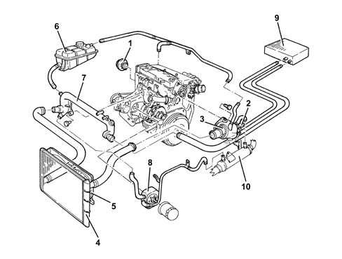
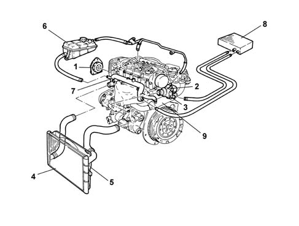

Introduction - ENGINE COOLING
- Path
- Descriptions > 10 ENGINE > 1088 ENGINE COOLING > Introduction - ENGINE COOLING
- Kind
- system description
- Applies to
- engines: 1.6 TS, 2.0 TS, 1.9 JTD 8V, 1.9 JTD 16V; all production periods
- Interactive page
- https://sloeber94.github.io/elrnDB-a147/en/#/3026090
Applies to: engines: 1.6 TS; all production periods
CONSTRUCTION FEATURES
ENGINE COOLING SYSTEM

1 - Water pump 2 - Engine coolant temperature sensor 3 - Thermostat 4 - Radiator 5 - Electric fan 6 - Reservoir 7 - Water pump rigid inlet pipe 8 - Water/oil heat exchanger 9 - Heater unit
Applies to: engines: 2.0 TS; all production periods
CONSTRUCTION FEATURES
ENGINE COOLING SYSTEM
1 - Water pump 2 - Engine coolant temperature sensor 3 - Thermostat 4 - Radiator 5 - Electric fan 6 - Reservoir 7 - Water pump rigid inlet pipe 8 - Water/oil heat exchanger 9 - Heater unit
Applies to: engines: 1.9 JTD 8V; all production periods
CONSTRUCTION FEATURES
ENGINE COOLING SYSTEM

1 - Water pump 2 - Engine coolant temperature sensor Characteristic of working principle 1060Gpressure pump electric control 3 - Thermostat 4 - Radiator 5 - Electric fan 6 - Reservoir 7 - Rigid coolant pump intake pipe 8 - Engine oil heat exchanger 9 - Climate control system heater 10 - E.G.R. exhaust gas heat exchanger Characteristic of working principle1080C exhaust gas recirculation system (e.g.r.)
Applies to: engines: 1.9 JTD 16V; all production periods
CONSTRUCTION FEATURES
COOLING SYSTEM

1 - Water pump 2 - Engine coolant temperature sensor Characteristic of working principle1060G pressure pump electric control 3 - Thermostat 4 - Radiator 5 - Electric fan 6 - Reservoir 7 - Rigid coolant pump intake pipe 8 - Engine oil heat exchanger 9 - Climate control system heater 10 - E.G.R. exhaust gas heat exchanger Characteristic of working principle1080C exhaust gas recirculation system (e.g.r.)